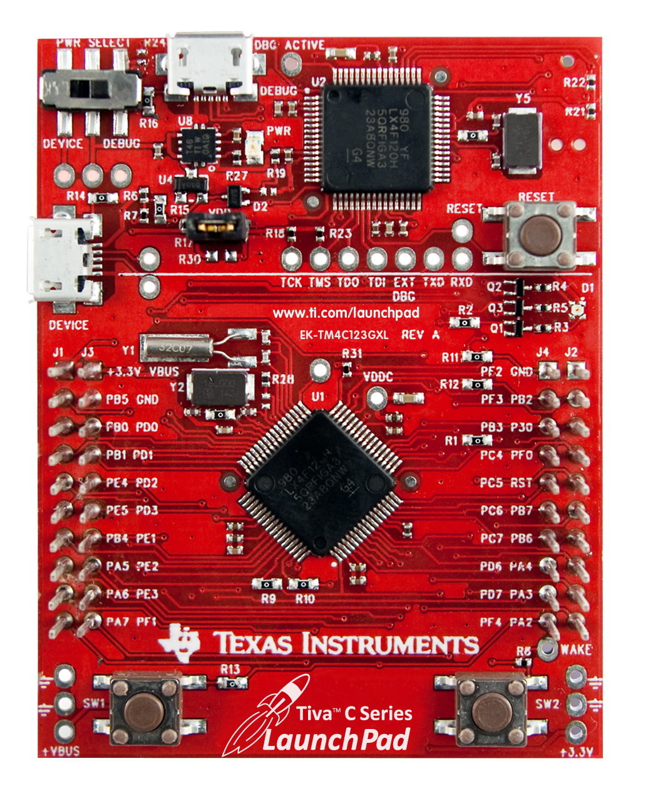
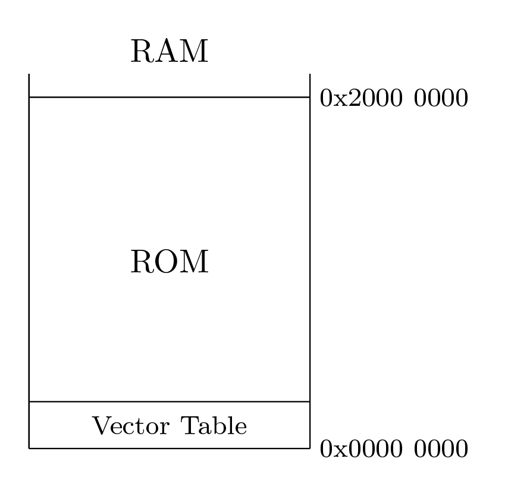
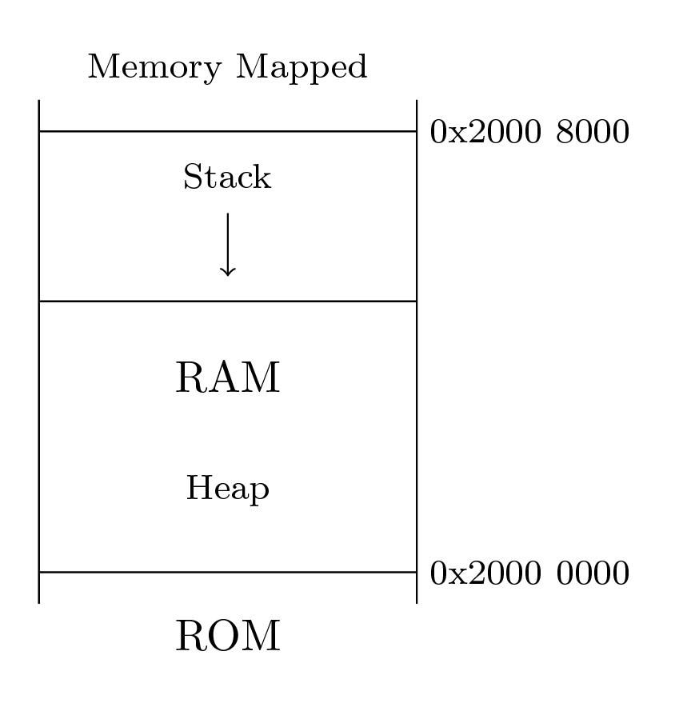
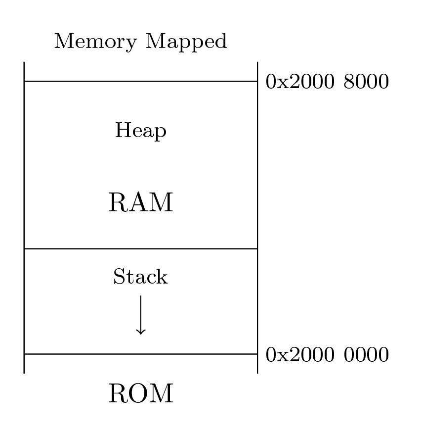
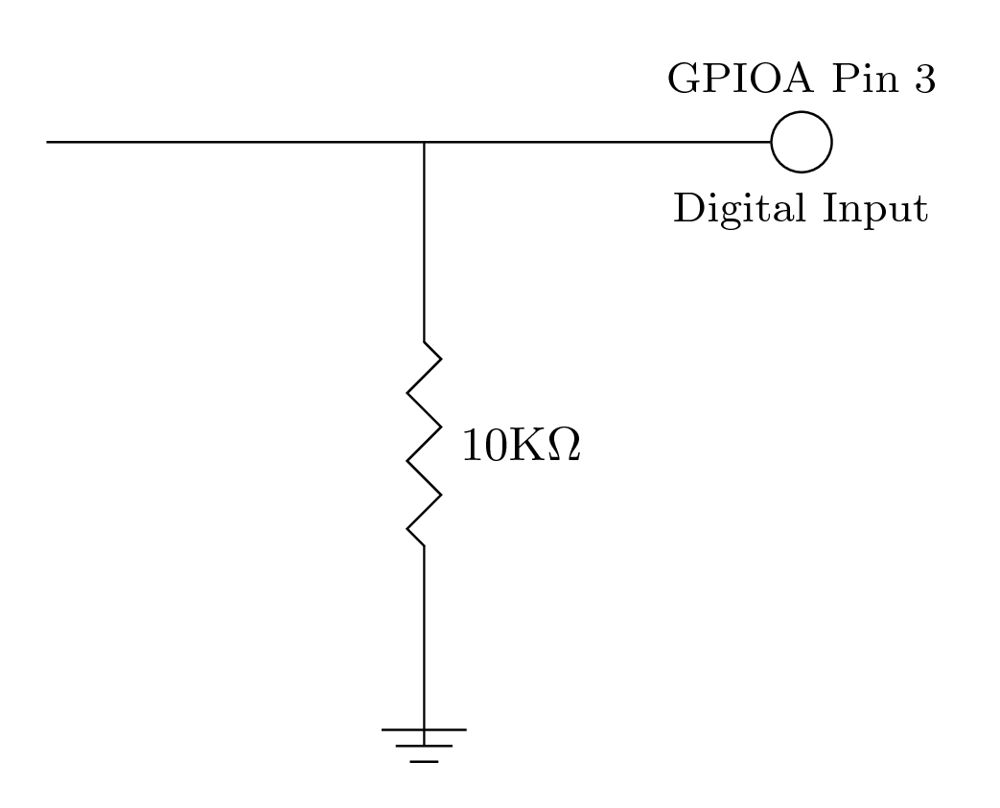
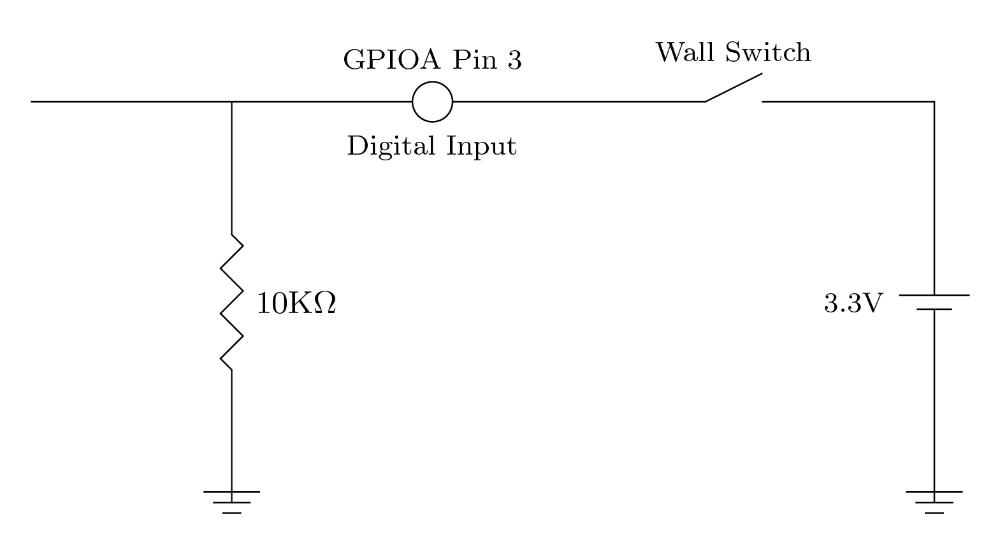
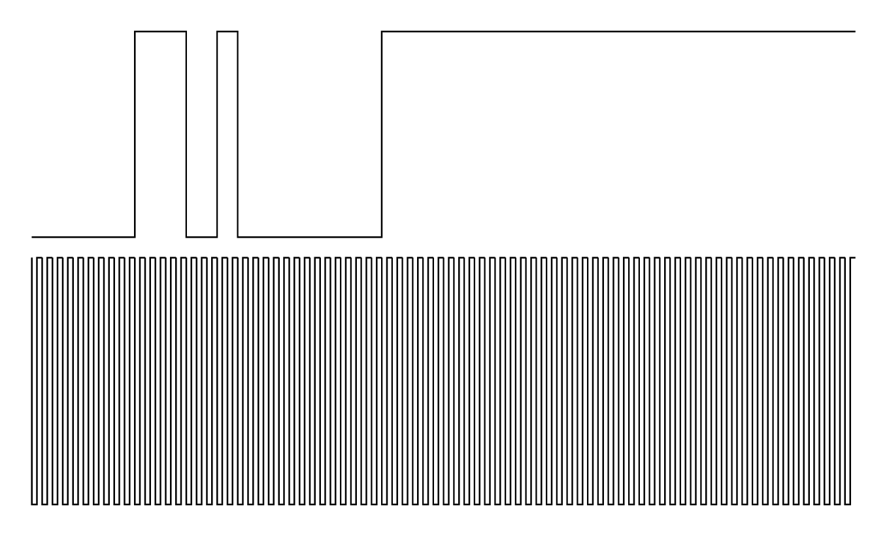
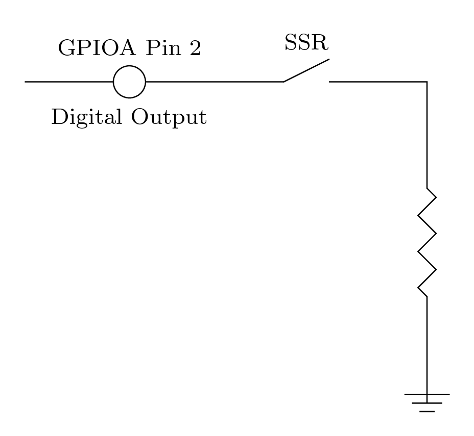
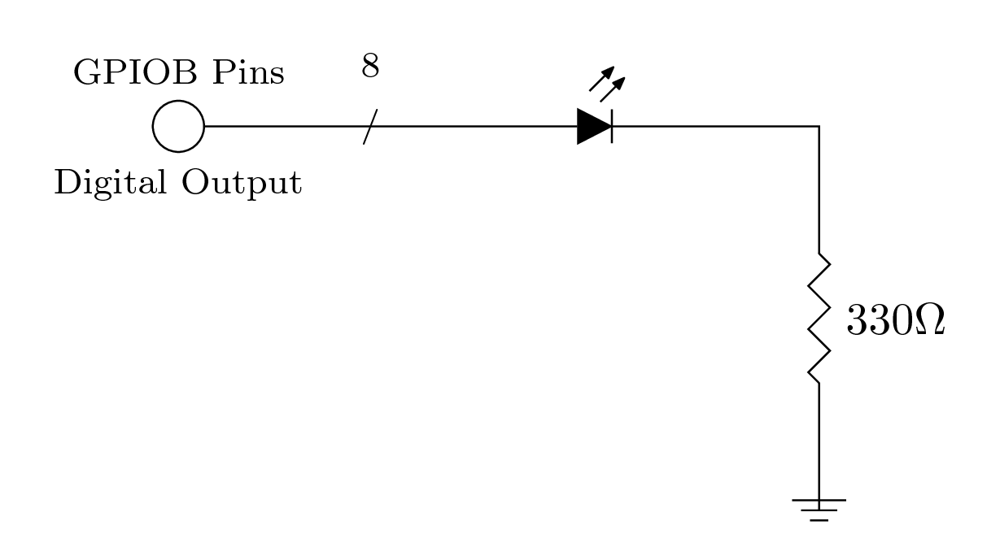

Introduction to
Embedded
Systems
Programming
Scott Overholser
https://github.com/eigenholser/embedded_programming_intro
Java/Scala dev at t0, blockchain securities.
The slides are linked at joind.in.
Interrupt any time with questions. Because of time constraints, may need to defer until after the talk.
Audience survey. Experience with embedded systems, C programming.
Juggling six workspaces. Any choppiness is unavoidable.
An embedded system is a computer system with a dedicated function
within a larger mechanical or electrical system. It is embedded as
part of a complete device often including hardware and mechanical
parts.
A microcontroller is a small computer on a single integrated
circuit containing a processor core, memory, and programmable
input/output peripherals.
TM4C

Introduce TM4C.
Demo with USB cable connnected to laptop with terminal and cu connected.
Start cu to capture UART!
Explain printf statements and optimizataion issues.
Demo with USB cable connected to power adapter only.
Introduce TM4C data sheet, user's manual, AAPCS document.
TI Code Composer Studio, GCC ARM. No limit.
Vector Table
Stack
Interrupts
GPIO
Vector Table

Vector table is just a constant 154 element integer array flashed to ROM. Size is 0x268 bytes.
Every entry in the vector table is a pointer to a function--except the first value, SP
Exceptions and Interrupts - TM4C123GH6PM Microcontroller Data Sheet, Page 102
Vector Table - TM4C123GH6PM Microcontroller Data Sheet, Page 107
Highlight Stack Pointer, Reset Vector, SysTick Vector, and GPIOA Vector - TM4C123GH6PM Microcontroller Data Sheet, Page 103
Review code startup.c/startup.h, and isr.c
See linker script
Run code in debugger, view memory at 0x0000 0000
Verify that fixture non-functional when debugger stopped.
Stack


Stack Pointer - TM4C123GH6PM Microcontroller Data Sheet, Page 107
Note two approaches to stack location in RAM.
Linker and stack location - linker.lds
Toyota Camry unintended acceleration problem - stack overflow.
HardFault exception handler on stack overflow
GCC attribute "naked" to not use stack operations. Avoids endless exception loop and changing state needed for debugging.
Review startup.c HardFault()
Configuration
Run Mode Clock Gating Control
Nested Vector Interrupt Controller
SysTick
Describe RCGC - TM4C123GH6PM Microcontroller Data Sheet, page 340
Debug UART GPIOA RCGC enable. View memory 0x4000 4000. Breakpoint on RCGC enable.
Describe NVIC EN/PRI - TM4C123GH6PM Microcontroller Data Sheet, page 142,152.
GPIO A corresponds to interrupt 0.
Debug set breakpoint, interrupt.c NVIC_Init(). See memory view 0xE000 E400 32-bit binary. Step to set priority and enable.
SysTick - TM4C123GH6PM Microcontroller Data Sheet, page 138
Debug, set breakpoint, interrupt.c SysTick_Init(). See memory view 0xE000 E010 32-bit binary. Step 3 times to configure SysTick.
GPIO Digital Input with Interrupt
GPIO control register map, TM4C123GH6PM Microcontroller Data Sheet, p660
GPIODEN/GPIODIR control registers.
GPIOIM interrupt mask
GPIOIBE interrupt both edges.
Set breakpoint in GPIOA_Pin_Init(). Step through register configuration. Note input/output configuration.
Pull Down Resistor

GPIOPDR control register. Keep input in known state.
Wall Switch

When the switch is closed (i.e. ON), logic HIGH is asserted on GPIOA pin 3. When the switch is open (i.e.OFF) logic LOW is asserted via PDR on GPIOA pin 3.
Problem is...the switch bounces.
Dramatization of switch bouncing versus CPU clock.

The switch bounce is random and on the order of single-digit milliseconds. I can only guess.
The CPU clock is very much faster than represented.
Originally I tried doing a bit toggle thinking that ultimately the number of bounces would be an odd number and thus leave GPIO PA2 HIGH.
That proved to be unreliable. It also seemed sloppy.
CPU clock cycles per millisecond
Explain debouncing algorithm: GPIOA interrupt handler. Disable GPIOA interrupts. Set pa3flag. After two SysTick cycles check for logic HIGH.
Then we conclude that the switch is on. Re-enable GPIOA interrupts, set pa3flag=0.
Set breakpoint isr.c, SysTick_Handler() inside lamp on section. Flip the switch on.
AAPCS - Arm Architecture Procedure Call Standard, See AAPCS document
Review main.c. Memory view for Stack at 0x2000 0380 32-bit hex C style. Confirm Registers pushed on stack.
Single-step through code turning lamp/LED on/off.
Each GPIO pin is bitwise addressable. Or, all bits may be written at once.
Explain read-modify-write problem with race condition
GPIO Digital Output
GPIODEN/GPIODIR must be configured.
Configured as outputs, GPIO pins do not require interrupt configuration.
Solid State Relay

Solid state relay from JameCo - 40 Amps, 240 Volts. Control signal 3-32 Volts, 15mA.
Larson Scanner

Bitwise shift a 10-bit number on a schedule. After each shift, display bits 2:9.
See isr.c line 35 in SysTick_Handler().
Note we are not using bitwise addressing here for GPIO writes.
Questions
https://github.com/eigenholser/embedded_programming_intro